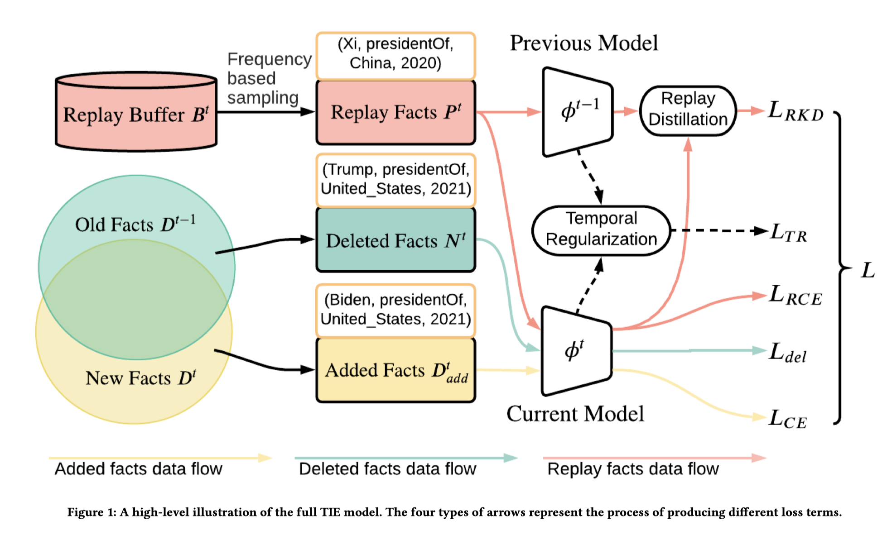
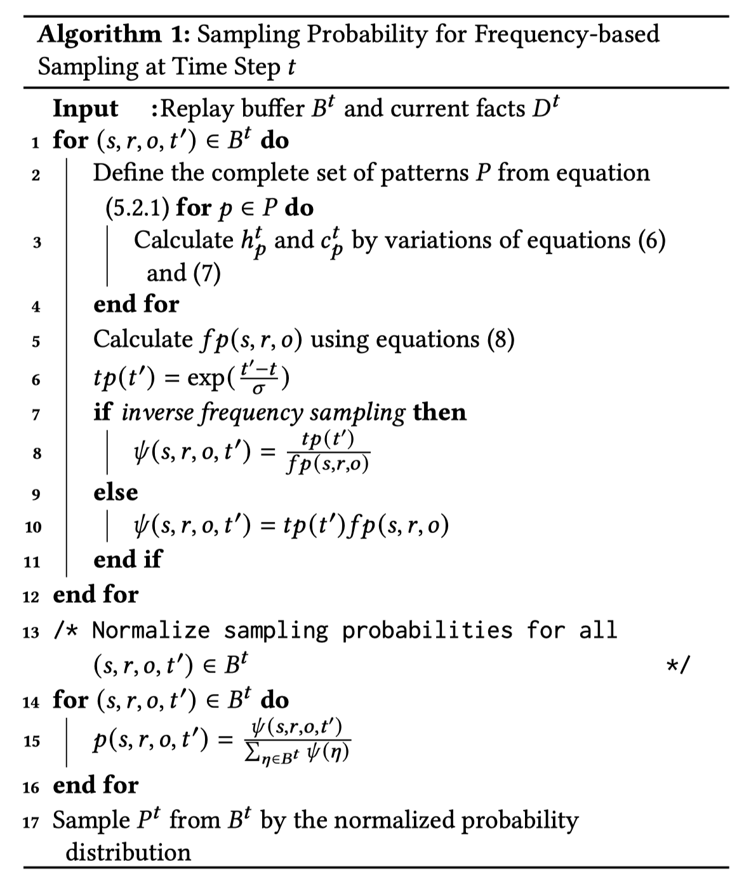
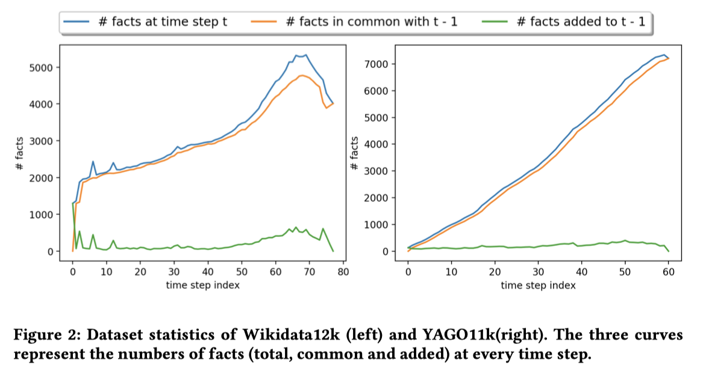
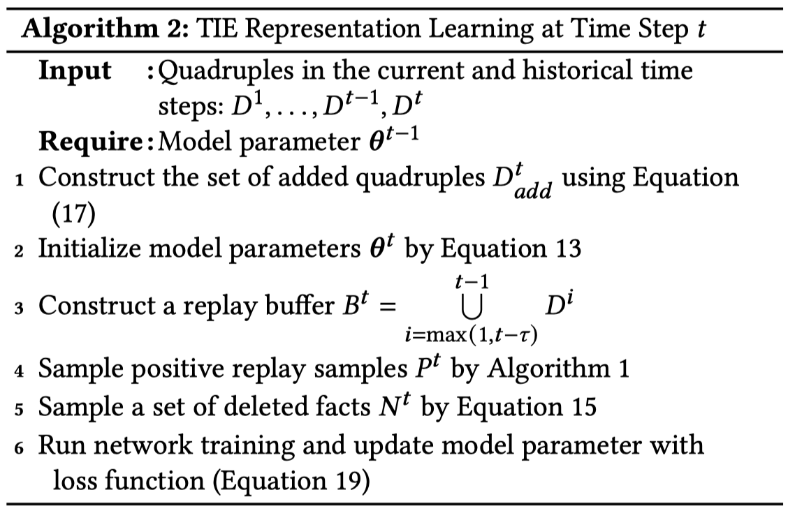
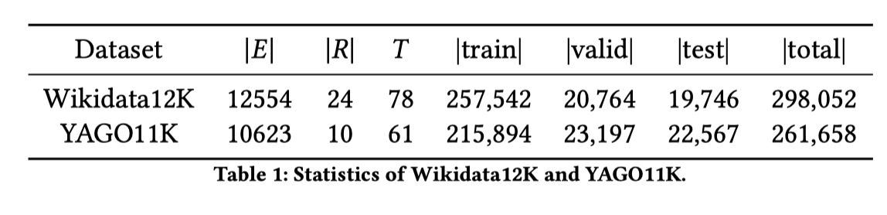
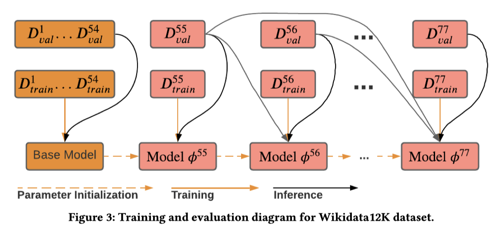
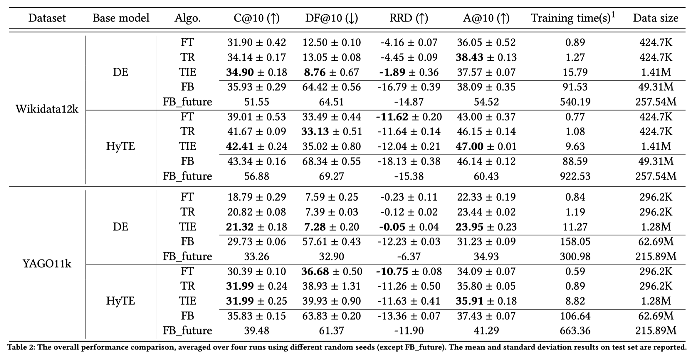

SIGIR2021:增量时序知识图谱补全框架TIE
本文最后更新于：1 小时前
贡献
- 本文引入了一项新任务，即增量TKGC，并提出了TIE框架，这是一种将增量学习与TKGC集成在一起的训练和评估框架。
- 提出了新的评估指标，分别是Deleted Facts Hits@10 (DF)和Reciprocal Rank Difference Measure (RRD)
- 提出了TKG迭代训练中，使用新增的fact进行微调训练，有效的减少了训练的数据集大小，并且显著提高了训练速度。
TKGC任务设定
在本文，作者分析对比了标准的TKGC任务和引入的增量TKGC任务的区别。主要体现在：
- 输入的范围：在标准的TKGC任务的训练中，训练和评估都在时间步1到T中每步进行一次，在增量的TKGC任务中，每个时间步仅使用新增的数据进行训练和评估。
- 用于评估模型的数据的时间步范围：在标准的TKGC任务的训练中，模型将${D^1,…,D^T}$作为输入，并回答${D^1{test},…,D^T{test}}$中的查询；增量的TKGC任务的训练中，模型将${D^1,…,D^t}$作为输入，并回答${D^1{test},…,D^t{test}}$中的查询。
- 得分函数产生最终排名的候选实体集：标准TKGC是所有实体集（$E=\bigcup{i=1}^{T} E^{i} $）；增量TKGC是已知的实体集（$E{k n o w n}^{t}=\bigcup_{i=1}^t E^{i}$）
度量方式
标准TKGC的度量方式
一般使用Hit@k和Mean Reciprocal Rank (MRR)的方式来对标准TKGC的效果进行评估。其中Hit@10的公式定义如下：
增量TKGC的度量方式
既然我们已经知道增量TKGC的目的就是从过去的时间步骤中去吸收知识，所以一个增量学习的方法应该基于他在当前和历史两个不同时间段的四元组预测的表现来评估。
Current and Historical Average Measure（当前和历史平均度量）其实就是用当前的模型，用当前和历史的$D_{test}$去评估模型，求平均值。
Intransigence Measure（顽固性度量）度量算法无法识别在历史阶段是成立，但是在当前阶段却是不成立的事实。比如一个学生从学校毕业了，那么他就不再和这个学校有联系了。
将顽固性度量具体化到模型的能力中可以分为以下两个方面：
- 为已删除的事实分配低RANK
- 将当前有效的事实排在已删除的事实之上
根据以上两个特性，本文提出了Deleted Facts Hits@10 (DF 删除事实Hit@10)和Reciprocal Rank Difference (RRD 相互排名差异)
$O_{s, r, t}^{\prime}$是负对象negative objects，$Z_t$是归一化常数：
TIE框架

一句话概括：使用增量学习方法，用来解决模型顽固性和历史知识过遗忘的缺点的高效的编码-解码结构的TKGC框架。其中，该框架使用Experience Replay经验重播和Temporal Regularization时间正则化技术来解决使用TKG表示学习模型来微调的方法的过度遗忘特性。除此之外，本文也提出了使用已删除的事实作为负训练的样本来解决模型顽固性的问题。最后，本文作者建议每个时间步时仅使用新添加的事实进行微调，因为TKG中模型最感兴趣的事实主要由持久性的事实组成，即只要事实的平均变化时间通常足够长，以至于相邻时间步长之间这个事实也不会产生剧烈的变化。
Experience Replay
经验重播需要定义一个滑动窗口作为缓冲区$B^t$，包含历史的k个时间段的TKG数据，用这个k个时间段和当前TKG上的全部四元组来训练模型。
Replay Fact Sampling重播事实采样
选择下列两种方案，从$B^t$中提取正样本$P^t$。
Uniform Sampling 统一采样三元组
Frequency-based Sampling 基于历史模式频率HPF和当前模式频率CPF来采样。需要去匹配的模式Pattern定义如下：（其中*可以代表任意实体）
举例，如果要求模式$(s,*,o)$的HPF和CPF，如下：
B中每个四元组的采样概率设计两个概念：频率相关概率$fp(s,r,o)$和时间相关概率$tp(t’)$，本文定义如下：
标量值𝜆表示与模式𝑝的频率相关的权重。𝜏是窗口的长度。另外引入𝛾作为控制$h^t{p}$和$c^t{p}$比重的参数。采用对数形式的频率计算公式主要是用来缩小具有特别大频率的模式的比例，以避免在同一种模式下重复采样过多的四元组。
$tp(t’)$代表距离当前时间步长t不同时间的指数衰减函数，用
来表示，其中$\sigma$是控制函数平滑度的标量。最后更具这两个概率结合得到的非归一化采样率$s(s,r,o,t’)$就等于$fp(s,r,o)tp(t’)$。
使用这种方式虽然可以对具有更高模式频率的四元组进行采样，但是在某些情况下，某些代表性高的四元组却有可能会因为匹配的模式低而没有被采样。这时候作者又提出了一种逆模式采样的方案，来鼓励采样较低模式频率的四元组:
在计算完所有四元组的采样率之后，我们将每个四元组的采样概率归一化，并使用它们采样获得$P^t$。

Representation Learning表示学习
通过下列方式，在$P^t$中使用依赖于时间的负采样策略收集负实体集（negative entities set）：
本文还使用了知识蒸馏损失来确保在新的当前学习步骤中不会丢失先前学习到的判别信息。在学习t时间的参数之前，模型存储前t-1个时间步的输出网络的参数如下：
其中$\phi^{t}$代表的是在时间t的时候模型和它当时的参数。
每次迭代replay knowledge distillation （重播知识蒸馏RKD）的损失和重播交叉熵（RCE）损失定义如下：
Temporal Regularization 时间正则化
$\theta^{t-1}$表示在时间t-1之后训练的模型参数，$\theta^{t-1}={E^{t-1},R^{t-1},W^{t-1},B^{t-1}}$,其中𝑾和𝑩是编码过程中的权重和偏差参数的矩阵。举例，使用Diachronic Embedding (DE)作为本文的Encoder时，定义如下：
$z_{i}$代表的是实体编码，维度是$|E|\times d$，前$\gamma d$个元素捕获时序、动态的信息，后$1-\gamma$个元素捕获静态的信息。
在时间步𝑡训练之前，我们使用$\theta^{t-1}$来初始化$\theta^t$，其中，实体的编码初始化如下：
作者提出了对参数空间进行时间正则化以减轻TKG表示学习中的严重遗忘问题（catastrophic forgetting）：
其中$\hat{\boldsymbol{E}}^{t}=\boldsymbol{E}^{t}\left[E_{k n o w n}^{t-1}\right]$。
Learning With Deleted Facts
为了减轻模型的顽固性问题，作者提出可以使用时序变化中被删除的四元组来训练模型：
我们将$N^t$中的每个四元组与一个负标签相关联，并计算二进制交叉熵损失为：
Learning With Added Facts

我们通过Wikidata12k和YAGP11k的统计数据观察到，除了时间属性外，大多数事实在时间步长t-1和t之间是共同的。 这表明使用𝐷内的所有四元组进行微调实质上只是重新强调了该模型先前已知道的大多数事实。
作者提出了一种新策略，就是仅用添加的事实来进行微调训练，这样做可以减小训练数据的大小，从而将训练速度提高几个数量级：
Optimization
最后TIE的损失函数被定义为前面几个阶段损失函数的加权和：

实验
数据集分析

实验设定

使用前70%个时间步的数据进行标准的TKGC任务和评估，最后30%的时间步上使用增量的TKGC训练和评估方式完成实验。
实验结果

其中
- C@10, or C-Hits@10 (↑): Current Hits@10
- DF@10, or DF-Hits@10 (↓) : Deleted Facts Hits@10.
- RRD (↑) : Reciprocal Rank Difference.
- A@10, or A-Hits@10 (↑) : Average Hits@10.
比较的不同实验设置：
- Fine-tune (FT)：一个基本的baseline加上仅使用新增的数据进行微调训练。
- Temporal Regularization (TR)：在FT的基础上加上了时间正则化损失进行训练。
- The proposed complete model (TIE)：完整的TIE框架。
- Full-batch (FB): 在这个实验中，使用$B^t$和$D^t$中的所有四元组进行微调模型。
- Full-batch with future data (FB_future):这个实验中，使用${D^1,…,D^T}$的所有数据，即standard TKGC
本博客所有文章除特别声明外，均采用 CC BY-SA 4.0 协议 ，转载请注明出处！